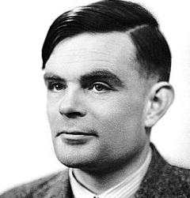

1. ¿Quién fue Alan Turing?
Alan Turing fue un matemático y científico británico, considerado uno de los padres de la informática. Durante la Segunda Guerra Mundial ayudó a descifrar la máquina Enigma.
2. ¿Cuándo fue utilizada la máquina Enigma? ¿Qué hacía?
Fue utilizada principalmente durante la Segunda Guerra Mundial por Alemania. Servía para cifrar mensajes militares secretos.
3. ¿Cada cuánto cambiaban las combinaciones de la máquina Enigma los alemanes?
Los alemanes cambiaban la configuración de Enigma todos los días.
4. Según Turing, ¿qué puede vencer a una máquina?
Según Turing, una máquina podía vencer a otra máquina porque podía realizar cálculos mucho más rápido que una persona.
5. Según el cálculo de Hugh Alexander, ¿cuántas posibilidades tiene la máquina Enigma?
Tenía aproximadamente 159 quintillones de posibilidades.
6. ¿Cómo quería Turing que evolucionara su máquina universal (Christopher)? (Referencia: minuto 43:50)
Turing quería que la máquina pudiera aprender de la experiencia y no depender solamente de instrucciones programadas
7. Según usted, ¿las máquinas pueden pensar como los humanos? ¿Qué pensaba Turing al respecto? ¿De qué trata el juego de la imitación? Recuerde que Turing lo propuso en 1950.
En mi opinión, las máquinas pueden imitar algunas capacidades humanas, pero no piensan exactamente como nosotros. Turing propuso el juego de la imitación, en el que una persona intenta descubrir si está hablando con un humano o con una máquina.
8. Investigue ¿qué es hoy conocido como el Test de Turing?, ¿y qué inteligencia artificial pudo engañar al juez en 2014?
Investigue las siguientes referencias de la película "El Código Enigma":
El cianuro en el laboratorio de Turing, al comienzo de la película.
El cianuro se relaciona con la muerte de Turing en 1954.br
Las manzanas que Turing regala a sus compañeros
Las manzanas se relacionan con una conocida historia sobre Turing y posteriormente con el logo de Apple, aunque no está confirmado que el logo haya sido creado como homenaje a él.
También investigue qué tiene que ver esto con Apple y qué opinó Steve Jobs.
Existe una teoría de que el logo de Apple homenajea a Turing, pero su diseñador negó que fuera así. Steve Jobs dijo que “ojalá lo fuera”.
El Test de Turing es una prueba para comprobar si una máquina puede conversar de manera que una persona no pueda distinguirla de un ser humano. En 2014, la inteligencia artificial "Eugene Goostman" logró convencer al 33 % de los jueces de que era una persona.
En la película *El Código Enigma*, el cianuro que aparece en el laboratorio de Turing se relaciona con su muerte en 1954, ya que la causa oficial fue un envenenamiento con cianuro. También aparecen las manzanas, que se relacionan con una conocida historia sobre Turing y con la manzana que fue encontrada cerca de él después de su muerte. Esto dio origen a una teoría que relaciona a Turing con el logo de Apple, ya que también es una manzana mordida. Sin embargo, el diseñador del logo, Rob Janoff, explicó que la mordida se agregó para que se pudiera reconocer claramente que era una manzana. Steve Jobs conocía esta teoría y, cuando le preguntaron si el logo era un homenaje a Turing, respondió: “Ojalá lo fuera”. Por eso, la relación entre Turing y Apple es una teoría conocida, pero no está confirmado que el logo haya sido creado en homenaje a él.
9. Según lo investigado, ¿por qué se cree que Turing tomó esa decisión? ¿Y usted cree que el gobierno inglés actuó correctamente? Fundamente su respuesta.
Se cree que las injusticias que sufrió, especialmente por su homosexualidad, pudieron influir en sus últimos años. En mi opinión, el gobierno inglés actuó mal, porque Turing fue castigado injustamente a pesar de sus grandes aportes a la ciencia y a su país.
Toque aqui para ver la pagina principal.